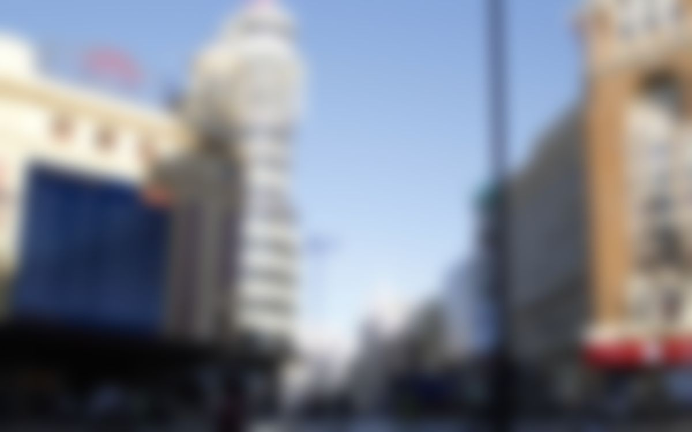
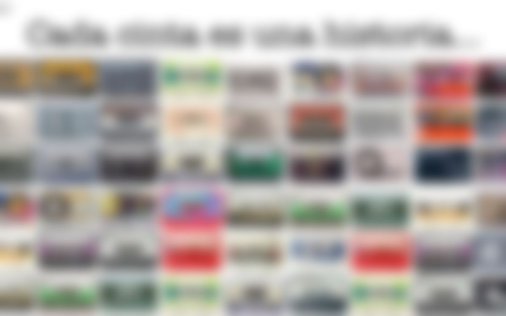
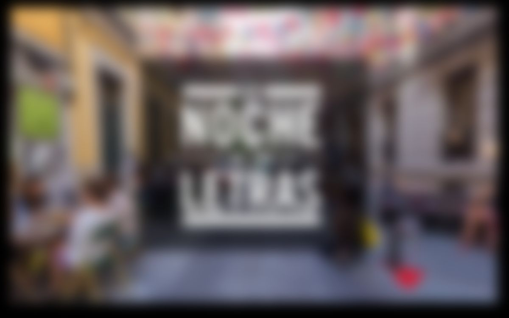
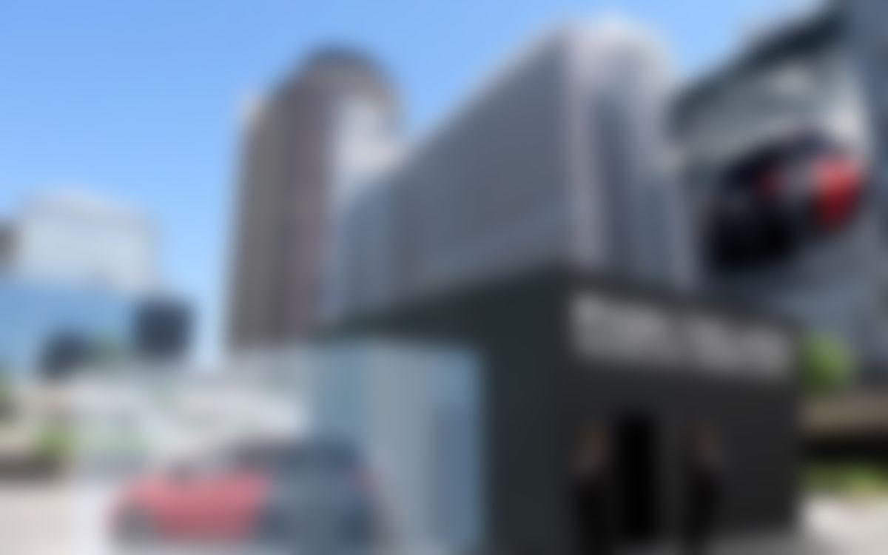

Pantallas en la calle
Why not?
Ofertas de vuelos en las pantallas de una plaza, con compra al momento: ¿te irías el 13 de octubre a Glasgow por 4 €?
Innovación e IA. Medios, marketing y tecnología.
Algunas de las incontables propuestas que se quedaron en el cliente y no llegaron al público. Estas son algunas de las que más me gustan. Van sin marcas.

Pantallas en la calle
Ofertas de vuelos en las pantallas de una plaza, con compra al momento: ¿te irías el 13 de octubre a Glasgow por 4 €?

Experiencia, contenido
Vivir hoy un futuro que aún no hemos alcanzado: tu propia mano en la vida cotidiana de un futuro cercano.

Producto, música
Cada cinta es una historia: listas de canciones que se comparten acercando el teléfono.

Guerrilla, activación
Recuperar la letra manuscrita, con una acción en la calle y una activación en un barrio.

Lanzamiento, experiencial
Un lanzamiento en forma de persecución: el público escapa o termina en la calle.
Hacia 1995
Una estación gráfica, una cámara y un módem satelital para transmitir desde el lugar y editar en el hotel. El documento importaba más que la calidad.
El fabricante lo veía a cuatro años. Yo lo quería para la feria siguiente.
2007–2009
Inferir el contexto con los sensores del móvil, antes de que existieran los beacons.
Faltó capital para innovar en España, justo al final de la burbuja. Mucho interés, ningún cheque. Cerró por cansancio.